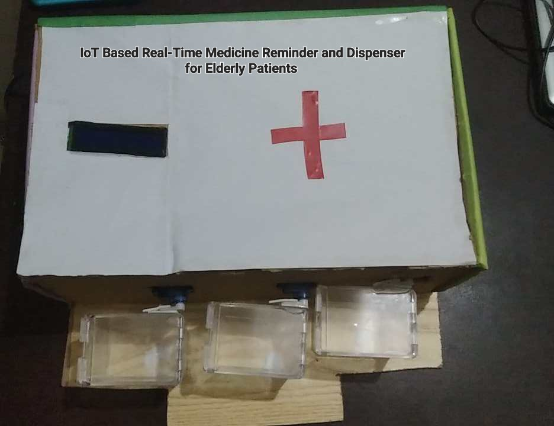

Hello,
I am Safwan Sulaiman Sadi

I am Safwan Sulaiman Sadi
People who follow a routine medication face a challenge when taking these medicines on regular intervals. It is observed that mostly older citizens face these problems if they have no one to take care of them. These people are not that smart to set reminders or alarms in their smartphones to remind them of their medication routines. A device such as an IoT based Real-Time Medicine Reminder and Dispenser Robot can help these individuals. This device will have a reminder for each medicine the user might take by four methods, it will have a speaker which will call out the name of the medicine, a Display which shall show the name of the medicine, a dispenser system which will dispense the right medicine and a mobile notification will be send to the user’s phone.
 Check out my paperPick and Place Robot is an useful type of robot which can be implemented in many day to day tasks in our daily lives. Learning to build a pick and place robot can help us to understand many aspects of basic robotics such as how we can implement hinges and joints to allow four degrees of freedom, 4 DOF in short and also how microprocessors, such as Arduino work. Making a robot also means learning and implementing the operation code of the given robot, finding out specific codes to make the robot efficient and seamless. Overcoming all these obstacles is challenging but also fun at the same time.